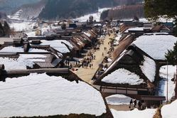
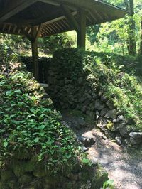
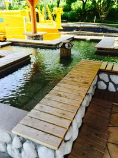
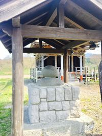
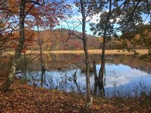
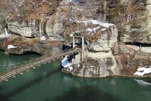

-おすすめしもごう♡-
【大内宿】
・まるで江戸時代にタイムスリップしたような
茅葺き屋根の集落
・ほとんどの家に住民が生活をしながら
村を守っている
・国の重要文化財に指定されている
【中山風穴】
・山や崖、岩には隙間が多く、この穴を
風穴（ふうけつ）と言う
・この自然な風穴群が沢山ある中山風穴
・冷風体験だけでなく季節の植物も楽しる
【湯野上温泉】
・大川渓谷沿いにある
・江戸時代から栄えた温泉地
・また玄関口となる湯野上温泉駅は
日本で唯一の茅葺屋根の駅
【へいほういし】
・怪力玄蕃の昔話より
・玄蕃は出稼ぎからの帰り
「稼ぎが少なかったからみんなを驚かせよう」と
川原の石をお手玉しながら帰ってきたとな
・へいほうはお手玉を意味する
・一個120kgあるとかないとか…
【観音沼】
・沼の周囲は季節によっての表情の違いを楽しむことができ、
それが沼の水面に映る景色はすごく情緒深い
・散策コースも沢山あり、いろんな角度から景色を楽しめる
【塔のへつり】
・長年の侵食と風化により生み出された奇形の断崖
・一部の岩を渡ることができ、自然のパワーを
感じることができる
・吊り橋はちょっとスリル!